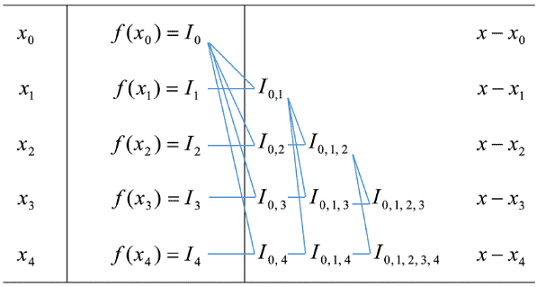
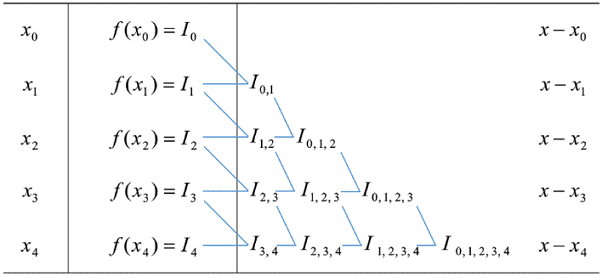
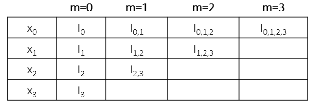

逐次线性插值
Lagrange算法是在n维线性空间中找了一组形式简单对称的基函数，使得插值问题容易计算，一般情况下这个算法已经足够好用了。但存在一个缺点是，如果由于精度不满足要求而临时增加一个插值节点时，所有基函数都得重新计算。我们想，那能不能找到一种改进的算法来避免这种资源浪费呢？实际上这就需要逐次线性插值法来解决，也就是说将高次插值问题逐步转化为线性插值，或者说将两组由k个节点算得的Lagrange插值作为形式节点，再进行一次线性插值来得到k+1个节点时的值。
先做如下符号约定：令\(I_{i_1 i_2 \cdots i_n}(x)\)表示函数\(f(x)\)关于节点\(i_1, i_2, \cdots ,i_n\)的n-1次插值多项式，\(I_{i_k}(x)\)是零次多项式，\(I_{i_k}(x)=f(x_{i_k})=y_{i_k}\)，\(i_1,\cdots, i_n\)均为非负整数。下面通过一个例子来说明“形式节点”的线性插值是如何做到的，演示最简单的情形：由2个节点增加到3个节点的插值问题，也就是由线性插值到抛物线插值。已知线性插值
根据n阶Lagrange插值多项式为n次齐次多项式，可以写出如下组合关系：
对于三个点的插值可以写成\(I_{0,1,2}(x)=\frac{(x-x_0)I_{1,2}(x)-(x-x_2)I_{0,1}(x)}{x_2-x_0}\)；一般地，有
Aitken方法
如果已有\(0,1,\cdots,k\)节点，添加第\(l\)节点，把上述改写成
我们可以由上面的递推式看到，计算时利用k=0到k=n-1逐次求得所需的插值多项式。例如k=0时，为线性插值，k=1时插值节点为\(x_0,x_1,x_l\)三点，公式为

Neville方法
或者改写成

可以看出若增加一个节点，便多计算一行，前面的结果可以重复利用，这便于快速应对精度不足的情形。另外，对于选取哪些节点来完成插值也比较自由，有利于自动选并逐步比较精度。Lagrange插值和逐次线性插值的算法复杂度都是\(O(n^2)\)，细致的分析给出逐次线性插值要比Lagrange插值略快几倍。
Python编程实现
对于递推公式表达的问题，可以使用递归算法来编程实现，例如我们把Neville方法中的递推公式写成对称的两项，考虑到通用性我们用\(i_j\)代替\(j\)，
def neville(xVal, yVal, x):
"""
Polynomial Interpolation: Neville's Method
"""
if len(yVal) == 1:
return yVal[0]
else:
I_0 = aitken(xVal[1:], yVal[1:], x)*(x - xVal[0])/(xVal[-1] - xVal[0])
I_n = aitken(xVal[:-1], yVal[:-1], x)*(x - xVal[-1])/(xVal[0] - xVal[-1])
return I_0 + I_n
# example:
xVal = [4, 9, 16]
yVal = [2, 3, 4]
print(neville(xVal, yVal, 11))
#3.33333..
有时候我觉得递归算法是不直观的实施方式，我们可以直接对照Neville方法的计算表来写代码，对于n个节点，我们更新n次列表，每次计算形式节点数目会减少一个，直到获取目标值。这里我重画了计算示意表格，便于理解数值计算的代码实现。

我们可以用二重循环来完成Neville插值（记得Lagrange插值也是二重循环实现，所以复杂度都是\(O(n^2)\)），python代码如下：
def neville2(xVal, yVal, x):
"""
Polynomial Interpolation: Neville's Method
Another implement
"""
n = len(xVal)
y = yVal.copy()
for m in range(1,n):
for i in range(n-m):
y[i] = ((x - xVal[i+m])*y[i]+(xVal[i]-x)*y[i+1])/(xVal[i]-xVal[i+m])
return y[0]
对于Aitken方法的Python实现，如果有时间再写。